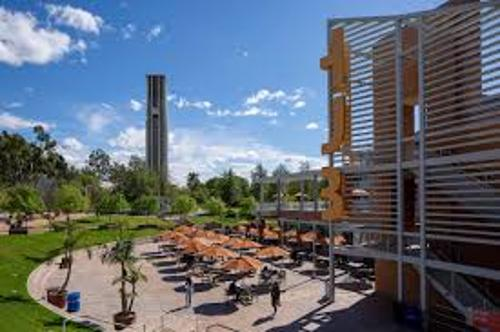
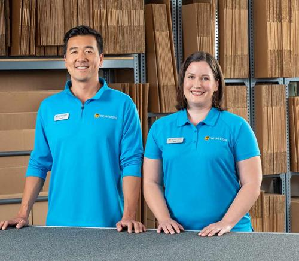

Jared Han
My name is Jared Han, and I am a motivated and hardworking individual with a passion for customer service, teamwork, and problem-solving. Currently, I am pursuing my academic interests in Sociology at the University of California, Riverside, where I have maintained a strong GPA of 3.6. I also have a background in Criminal Justice from California State University, Fullerton, further enriching my understanding of societal structures and community engagement. Professionally, I have developed a well-rounded skill set through my role as a team leader at The UPS Store in Buena Park. From April 2020 to November 2023, I consistently demonstrated strong leadership by coaching sales associates, enhancing daily operations, and significantly improving customer satisfaction ratings. My responsibilities included managing opening and closing procedures, reconciling sales transactions, responding to customer inquiries, and performing various clerical duties such as document scanning, faxing, and notarizing with certification. Through this experience, I honed my communication, organizational, and analytical skills — all of which have prepared me to succeed in dynamic professional environments.
Beyond my work at The UPS Store, I was actively involved as a volunteer with the Hwarang Youth Foundation from 2016 to 2019. During this time, I further developed my ability to coordinate projects, resolve issues efficiently, and maintain enthusiasm in high-paced settings. Handling over 100 calls daily to address customer and community needs helped sharpen my multitasking and critical thinking abilities.
I am a Certified Notary Public (2022-2026), which complements my clerical expertise and highlights my commitment to professionalism and attention to detail. In addition to my academic and professional pursuits, I have a strong personal interest in handheld electronic devices, automotive technology, and the exciting future of electric cars and motors. I am always eager to stay current with technological advancements, blending my hobbies with my broader goal of continuous self-improvement.
Looking forward, I aim to leverage my diverse skills in business administration, customer relations, and analytical problem-solving to contribute meaningfully to organizations that value innovation, teamwork, and community engagement. Whether working independently or collaboratively, I bring motivation, creativity, and a drive for excellence to every project I undertake.
Experience
Sales Associate / Clerk
• Coached sales associates on product knowledge and customer service.
• Handled daily opening and closing procedures.
• Assisted customers with shipments, notarizations, and document services.
Community Service Volunteer
• Coordinated charity projects and community service events.
• Provided assistence with daily communications.
Lyft Driver
• Provided safe and reliable transportation to passengers.
• Maintained a 5-stary driver rating throguh excelleng customer service.
• Navigated efficiently using GPS and local area knowledge.
• Managed over 500 successful rides while ensuring rider satisfacction
Education
UC Riverside
California State University, Fullerton
Portfolio
.jpg)
 